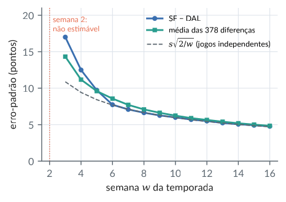
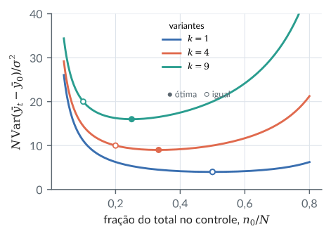
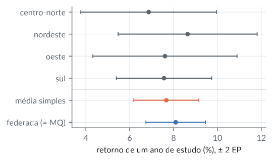

12. Estimabilidade e o teorema de Gauss–Markov
Material reprodutível do Capítulo 12 do livro.
Exemplos
Funções estimáveis num fator com três níveis
R/cap12/01_estimabilidade.R
# Cap. 12: Funções estimáveis num fator com três níveis
y <- c(5, 7, 10, 12, 9); grupo <- c(1, 1, 2, 2, 3)
X <- cbind(1, outer(grupo, 1:3, "==") * 1) # [1 D]: posto 3
XtX <- crossprod(X); Xty <- crossprod(X, y)
G1 <- MASS::ginv(XtX) # Moore-Penrose
G2 <- matrix(0, 4, 4) # zera o intercepto
G2[2:4, 2:4] <- solve(XtX[2:4, 2:4])
b1 <- drop(G1 %*% Xty); b2 <- drop(G2 %*% Xty)
round(rbind(b_mp = b1, b_ref = b2), 3) # mu, a1, a2, a3
L <- rbind("mu+a1" = c(1, 1, 0, 0), "a1-a2" = c(0, 1, -1, 0),
"a1-(a2+a3)/2" = c(0, 1, -.5, -.5),
"mu" = c(1, 0, 0, 0), "a1" = c(0, 1, 0, 0))
# teste: l'(I - G X'X) = 0 <=> l no espaço linha de X
teste <- apply(L, 1, function(l)
max(abs(l %*% (diag(4) - G1 %*% XtX))))
round(cbind(estimavel = teste < 1e-10, mp = L %*% b1,
ref = L %*% b2, var_mp = diag(L %*% G1 %*% t(L)),
var_ref = diag(L %*% G2 %*% t(L))), 3)Saída
[,1] [,2] [,3] [,4]
b_mp 6.5 -0.5 4.5 2.5
b_ref 0.0 6.0 11.0 9.0
estimavel var_mp var_ref
mu+a1 1 6.0 6 0.500 0.500
a1-a2 1 -5.0 -5 1.000 1.000
a1-(a2+a3)/2 1 -4.0 -4 0.875 0.875
mu 0 6.5 0 0.125 0.000
a1 0 -0.5 6 0.375 0.500python/cap12/01_estimabilidade.py
"""Cap. 12: Funções estimáveis num fator com três níveis"""
import numpy as np
y = np.array([5, 7, 10, 12, 9.]); grupo = np.array([1, 1, 2, 2, 3])
X = np.column_stack([np.ones(5), grupo[:, None] == [1, 2, 3]])
XtX = X.T @ X; Xty = X.T @ y
G1 = np.linalg.pinv(XtX, rcond=1.5e-8) # Moore-Penrose
G2 = np.zeros((4, 4)) # zera o intercepto
G2[1:, 1:] = np.linalg.inv(XtX[1:, 1:])
b1 = G1 @ Xty; b2 = G2 @ Xty
print("b_mp ", b1.round(3), "\nb_ref", b2.round(3)) # mu, a1, a2, a3
L = {"mu+a1": [1, 1, 0, 0], "a1-a2": [0, 1, -1, 0],
"a1-(a2+a3)/2": [0, 1, -.5, -.5],
"mu": [1, 0, 0, 0], "a1": [0, 1, 0, 0]}
# teste: l'(I - G X'X) = 0 <=> l no espaço linha de X
print(f"{'':13}{'estim.':>7}{'mp':>6}{'ref':>6}"
f"{'v_mp':>7}{'v_ref':>7}")
for nome, l in L.items():
l = np.array(l, float)
e = np.max(np.abs(l @ (np.eye(4) - G1 @ XtX))) < 1e-10
print(f"{nome:13}{e:>7}{l @ b1:6.1f}{l @ b2:6.1f}"
f"{l @ G1 @ l:7.3f}{l @ G2 @ l:7.3f}")Saída
b_mp [ 6.5 -0.5 4.5 2.5]
b_ref [ 0. 6. 11. 9.]
estim. mp ref v_mp v_ref
mu+a1 1 6.0 6.0 0.500 0.500
a1-a2 1 -5.0 -5.0 1.000 1.000
a1-(a2+a3)/2 1 -4.0 -4.0 0.875 0.875
mu 0 6.5 0.0 0.125 0.000
a1 0 -0.5 6.0 0.375 0.500Gauss-Markov: três estimadores não viesados da inclinação
R/cap12/02_gauss_markov.R
# Cap. 12: Gauss-Markov: três estimadores não viesados da inclinação
source(file.path("R", "comum", "gerador.R"))
x <- 0:4; X <- cbind(1, x); n <- 5
A <- rbind(mq = solve(crossprod(X), t(X))[2, ], # a'y para cada um
pontas = c(-1, 0, 0, 0, 1) / 4,
pares = c(-1, -1, 0, 1, 1) / 6)
round(A, 3)
M <- cbind(A %*% X, rowSums(A^2)) # a'X = (0, 1)?
colnames(M) <- c("a'1", "a'x", "var/s2"); round(M, 4)
# Monte Carlo com o gerador portátil: beta = (2, 0,5), sigma = 1
g <- gerador(12); R <- 20000
E <- matriz_normal(g, R, n)
Y <- matrix(2 + 0.5 * x, R, n, byrow = TRUE) + E
est <- Y %*% t(A)
round(rbind(media = colMeans(est), var = apply(est, 2, var)), 4)
# Versão matricial: Cov(Ay) - Cov(b_mq) é semidefinida positiva
Ap <- rbind(c(1, 0, 0, 0, 0), A["pontas", ]) # (y_1, inclinação)
Cmq <- solve(crossprod(X)); Cp <- tcrossprod(Ap)
round(eigen(Cp - Cmq)$values, 4)Saída
[,1] [,2] [,3] [,4] [,5]
mq -0.200 -0.100 0 0.100 0.200
pontas -0.250 0.000 0 0.000 0.250
pares -0.167 -0.167 0 0.167 0.167
a'1 a'x var/s2
mq 0 1 0.1000
pontas 0 1 0.1250
pares 0 1 0.1111
mq pontas pares
media 0.5004 0.4997 0.5009
var 0.0996 0.1245 0.1108
[1] 0.4066 0.0184python/cap12/02_gauss_markov.py
"""Cap. 12: Gauss-Markov: três estimadores da inclinação"""
import sys
from pathlib import Path
import numpy as np
sys.path.insert(0, str(Path(__file__).resolve().parents[1]))
from comum.gerador import Gerador # noqa: E402
x = np.arange(5.); X = np.column_stack([np.ones(5), x]); n = 5
A = np.vstack([np.linalg.solve(X.T @ X, X.T)[1], # a'y de cada um
np.array([-1, 0, 0, 0, 1]) / 4,
np.array([-1, -1, 0, 1, 1]) / 6])
nomes = ["mq", "pontas", "pares"]
print(A.round(3) + 0.0)
for nm, a in zip(nomes, A): # a'X = (0, 1)?
print(f"{nm:7} a'X = {(a @ X).round(4) + 0.0},"
f" var/s2 = {a @ a:.4f}")
# Monte Carlo com o gerador portátil: beta = (2, 0,5), sigma = 1
g = Gerador(12); R = 20000
E = g.matriz_normal(R, n)
Y = 2 + 0.5 * x + E
est = Y @ A.T
print("média", est.mean(0).round(4))
print("var ", est.var(0, ddof=1).round(4))
# Versão matricial: Cov(Ay) - Cov(b_mq) é semidefinida positiva
Ap = np.vstack([[1, 0, 0, 0, 0], A[1]]) # (y_1, inclinação)
Cmq = np.linalg.inv(X.T @ X); Cp = Ap @ Ap.T
print(np.linalg.eigvalsh(Cp - Cmq)[::-1].round(4))Saída
[[-0.2 -0.1 0. 0.1 0.2 ]
[-0.25 0. 0. 0. 0.25 ]
[-0.167 -0.167 0. 0.167 0.167]]
mq a'X = [0. 1.], var/s2 = 0.1000
pontas a'X = [0. 1.], var/s2 = 0.1250
pares a'X = [0. 1.], var/s2 = 0.1111
média [0.5004 0.4997 0.5009]
var [0.0996 0.1245 0.1108]
[0.4066 0.0184]Aveia sem a casela Victory/0,6: o que ainda é estimável
R/cap12/03_aveia_estimabilidade.R
# Cap. 12: Aveia sem a casela Victory/0,6: o que ainda é estimável
a <- read.csv(file.path("dados", "yates_oats.csv"))
a$gen <- factor(a$gen); a$dose <- factor(a$nitro)
b <- a[!(a$gen == "Victory" & a$nitro == 0.6), ]
cel <- interaction(b$gen, b$dose, drop = TRUE) # 11 caselas
mc <- lm(yield ~ 0 + cel + block, data = b, # médias + blocos
contrasts = list(block = "contr.sum"))
s2 <- sum(resid(mc)^2) / mc$df.residual
c(n = nrow(b), posto = mc$rank, gl = mc$df.residual, s = sqrt(s2))
# Modelo de efeitos com interação: posto incompleto
Xe <- model.matrix(~ block + gen * dose, data = b,
contrasts.arg = list(block = "contr.sum"))
G <- MASS::ginv(crossprod(Xe)); bh <- G %*% crossprod(Xe, b$yield)
P <- diag(ncol(Xe)) - G %*% crossprod(Xe) # l estimável <=> l'P = 0
estim <- function(l) max(abs(l %*% P))
# linha de lambda para cada média de casela: média das linhas do
# delineamento completo sobre os 6 blocos (soma zero zera os blocos)
Xa <- model.matrix(~ block + gen * dose, data = a,
contrasts.arg = list(block = "contr.sum"))
M <- rowsum(Xa, paste(a$gen, a$nitro)) / 6
linha <- function(g, d) M[paste(g, d), ]
dif <- function(ds) Reduce(`+`, lapply(ds, function(d)
linha("Victory", d) - linha("GoldenRain", d))) / length(ds)
L <- rbind(doses_0_a_0.4 = dif(c("0", "0.2", "0.4")),
todas_as_doses = dif(c("0", "0.2", "0.4", "0.6")),
so_dose_0.6 = dif("0.6"))
res <- cbind(desvio_espaco_linha = apply(L, 1, estim),
estimativa = drop(L %*% bh),
ep = sqrt(s2 * diag(L %*% G %*% t(L))))
round(res, 3)
# Sob aditividade (sem interação), a média sobre as doses é estimável
ma <- lm(yield ~ block + gen + dose, data = b)
ea <- c(coef(ma)["genVictory"],
sqrt(vcov(ma)["genVictory", "genVictory"]))
# Dados completos, modelo com interação (referência)
cf12 <- interaction(a$gen, a$dose)
mf <- lm(yield ~ 0 + cf12 + block, data = a,
contrasts = list(block = "contr.sum"))
cf <- coef(mf); V <- vcov(mf)
lf <- (grepl("Victory", names(cf)) -
grepl("GoldenRain", names(cf))) / 4
ef <- c(sum(lf * cf), sqrt(drop(t(lf) %*% V %*% lf)))
r <- rbind(aditivo_sem_casela = ea, completo_interacao = ef)
colnames(r) <- c("estimativa", "ep"); round(r, 3)Saída
n posto gl s
66.00000 16.00000 50.00000 15.46335
desvio_espaco_linha estimativa ep
doses_0_a_0.4 0.00 -7.056 5.154
todas_as_doses 0.25 -7.417 5.467
so_dose_0.6 1.00 -8.500 8.928
estimativa ep
aditivo_sem_casela -7.604 4.817
completo_interacao -6.875 4.603python/cap12/03_aveia_estimabilidade.py
"""Cap. 12: Aveia sem a casela Victory/0,6: o que é estimável"""
from pathlib import Path
import numpy as np
import pandas as pd
raiz = Path(__file__).resolve().parents[2]
a = pd.read_csv(raiz / "dados" / "yates_oats.csv")
gv, ga = np.unique(a["gen"], return_inverse=True) # GoldenRain, ...
dv, da = np.unique(a["nitro"], return_inverse=True)
bv, ba = np.unique(a["block"], return_inverse=True)
y = a["yield"].to_numpy(float)
Bs = np.vstack([np.eye(5), -np.ones(5)])[ba] # blocos, soma zero
def efeitos(g, d, b): # ~ block + gen * dose
A = np.eye(3)[g][:, 1:]; N = np.eye(4)[d][:, 1:]
AN = (A[:, :, None] * N[:, None, :]).reshape(len(g), -1)
return np.column_stack([np.ones(len(g)), Bs[b], A, N, AN])
ok = ~((gv[ga] == "Victory") & (dv[da] == 0.6))
cel = ga * 4 + da
cheias = np.unique(cel[ok])
Xc = np.column_stack([np.eye(12)[cel[ok]][:, cheias], Bs[ba[ok]]])
yb = y[ok]; n = len(yb)
r = np.linalg.matrix_rank(Xc)
res = yb - Xc @ np.linalg.lstsq(Xc, yb, rcond=None)[0]
s2 = res @ res / (n - r)
print(f"n {n}, posto {r}, gl {n - r}, s {np.sqrt(s2):.5f}")
# Modelo de efeitos com interação: posto incompleto
Xe = efeitos(ga[ok], da[ok], ba[ok])
XtX = Xe.T @ Xe; G = np.linalg.pinv(XtX, rcond=1.5e-8)
bh = G @ Xe.T @ yb
P = np.eye(Xe.shape[1]) - G @ XtX
# linha de lambda para cada casela: média das linhas sobre os blocos
Xa = efeitos(ga, da, ba)
M = np.array([Xa[cel == c].mean(0) for c in range(12)])
gi = {g: i for i, g in enumerate(gv)}
def dif(ds):
v, g = gi["Victory"] * 4, gi["GoldenRain"] * 4
return np.mean([M[v + d] - M[g + d] for d in ds], axis=0)
L = {"doses_0_a_0.4": dif([0, 1, 2]),
"todas_as_doses": dif([0, 1, 2, 3]), "so_dose_0.6": dif([3])}
print(f"{'':15}{'desvio':>8}{'estim.':>9}{'ep':>7}")
for nome, l in L.items():
print(f"{nome:15}{np.max(np.abs(l @ P)):8.2f}{l @ bh:9.3f}"
f"{np.sqrt(s2 * l @ G @ l):7.3f}")
# Sob aditividade (sem interação), a média sobre as doses é estimável
A = np.eye(3)[ga[ok]][:, 1:]; N = np.eye(4)[da[ok]][:, 1:]
Xa2 = np.column_stack([np.ones(n), np.eye(6)[ba[ok]][:, 1:], A, N])
Ci = np.linalg.inv(Xa2.T @ Xa2); ba2 = Ci @ Xa2.T @ yb
e = yb - Xa2 @ ba2; s2a = e @ e / (n - Xa2.shape[1])
j = 6 + gi["Victory"] - 1
print(f"aditivo sem casela {ba2[j]:.3f}"
f" ep {np.sqrt(s2a * Ci[j, j]):.3f}")
# Dados completos, modelo com interação (referência)
Xf = np.column_stack([np.eye(12)[cel], Bs[ba]])
Cf = np.linalg.inv(Xf.T @ Xf); bf = Cf @ Xf.T @ y
e = y - Xf @ bf; s2f = e @ e / (len(y) - 17)
lf = np.zeros(17)
lf[gi["Victory"] * 4:gi["Victory"] * 4 + 4] = 1 / 4
lf[gi["GoldenRain"] * 4:gi["GoldenRain"] * 4 + 4] = -1 / 4
print(f"completo interação {lf @ bf:.3f}"
f" ep {np.sqrt(s2f * lf @ Cf @ lf):.3f}")Saída
n 66, posto 16, gl 50, s 15.46335
desvio estim. ep
doses_0_a_0.4 0.00 -7.056 5.154
todas_as_doses 0.25 -7.417 5.467
so_dose_0.6 1.00 -8.500 8.928
aditivo sem casela -7.604 ep 4.817
completo interação -6.875 ep 4.603Ratings de Massey: estimabilidade e precisão
R/cap12/04_ratings_precisao.R
# Cap. 12: Ratings de Massey: estimabilidade e precisão
nfl <- read.csv(file.path("dados", "nfl.csv"))
s <- subset(nfl, ano == 1981)
times <- sort(unique(c(s$mandante, s$visitante)))
delineamento <- function(j) { # +1 mandante, -1 visitante
X <- matrix(0, nrow(j), length(times), dimnames = list(NULL, times))
X[cbind(seq_len(nrow(j)), match(j$mandante, times))] <- 1
X[cbind(seq_len(nrow(j)), match(j$visitante, times))] <- -1
cbind(X, mando = 1)
}
lam <- function(i, j) { l <- setNames(numeric(29), c(times, "mando"))
l[i] <- 1; l[j] <- -1; l }
ajuste <- function(j) {
X <- delineamento(j); y <- j$pontos_mandante - j$pontos_visitante
G <- MASS::ginv(crossprod(X)); b <- drop(G %*% crossprod(X, y))
r <- qr(X)$rank; s2 <- sum((y - X %*% b)^2) / (nrow(X) - r)
list(X = X, G = G, b = b, s2 = s2, gl = nrow(X) - r)
}
f <- ajuste(s); l <- lam("SF", "DAL")
ep <- sqrt(f$s2 * drop(t(l) %*% f$G %*% l))
round(c(s = sqrt(f$s2), gl = f$gl, SF_DAL = sum(l * f$b), ep = ep,
t = sum(l * f$b) / ep), 3)
# Precisão de todas as 378 diferenças e da diferença 1o - 2o
D <- outer(1:28, 1:28, Vectorize(function(i, j)
if (i < j) drop(t(lam(times[i], times[j])) %*% f$G %*%
lam(times[i], times[j])) else NA))
round(c(ep_min = sqrt(f$s2 * min(D, na.rm = TRUE)),
ep_medio = mean(sqrt(f$s2 * D), na.rm = TRUE),
ep_max = sqrt(f$s2 * max(D, na.rm = TRUE))), 2)
l2 <- lam("PHA", "SF")
round(c(PHA_SF = sum(l2 * f$b),
ep = sqrt(f$s2 * drop(t(l2) %*% f$G %*% l2))), 2)
# Semana a semana: SF - DAL é estimável? Com que variância (em s2)?
t(sapply(2:16, function(w) {
fw <- ajuste(subset(s, semana <= w)); X <- fw$X
P <- diag(29) - fw$G %*% crossprod(X) # l estimável <=> l'P = 0
e <- max(abs(l %*% P)) < 1e-8
c(semana = w, jogos = nrow(X), estimavel = e,
var_s2 = if (e) round(drop(t(l) %*% fw$G %*% l), 3) else NA)
}))Saída
s gl SF_DAL ep t
13.323 196.000 0.110 4.778 0.023
ep_min ep_medio ep_max
4.44 4.84 5.07
PHA_SF ep
2.46 4.91
semana jogos estimavel var_s2
[1,] 2 28 0 NA
[2,] 3 42 1 1.629
[3,] 4 56 1 0.880
[4,] 5 70 1 0.533
[5,] 6 84 1 0.337
[6,] 7 98 1 0.283
[7,] 8 112 1 0.248
[8,] 9 126 1 0.221
[9,] 10 140 1 0.202
[10,] 11 154 1 0.183
[11,] 12 168 1 0.170
[12,] 13 182 1 0.155
[13,] 14 196 1 0.144
[14,] 15 210 1 0.136
[15,] 16 224 1 0.129python/cap12/04_ratings_precisao.py
"""Cap. 12: Ratings de Massey: estimabilidade e precisão"""
from pathlib import Path
import numpy as np
import pandas as pd
raiz = Path(__file__).resolve().parents[2]
nfl = pd.read_csv(raiz / "dados" / "nfl.csv")
s = nfl[nfl["ano"] == 1981]
times = sorted(set(s["mandante"]) | set(s["visitante"]))
idx = {t: i for i, t in enumerate(times)}
def delineamento(j): # +1 mandante, -1 visitante
X = np.zeros((len(j), 29)); X[:, 28] = 1
lin = np.arange(len(j))
X[lin, j["mandante"].map(idx)] = 1
X[lin, j["visitante"].map(idx)] = -1
return X
def lam(i, j):
l = np.zeros(29); l[idx[i]] = 1; l[idx[j]] = -1
return l
def ajuste(j):
X = delineamento(j)
y = (j["pontos_mandante"] - j["pontos_visitante"]).to_numpy(float)
G = np.linalg.pinv(X.T @ X, rcond=1.5e-8) # tol. do ginv
b = G @ X.T @ y
gl = len(y) - np.linalg.matrix_rank(X)
return X, G, b, np.sum((y - X @ b) ** 2) / gl, gl
X, G, b, s2, gl = ajuste(s); l = lam("SF", "DAL")
ep = np.sqrt(s2 * l @ G @ l)
print(f"s {np.sqrt(s2):.3f}, gl {gl}, SF-DAL {l @ b:.3f},"
f" ep {ep:.3f}, t {l @ b / ep:.3f}")
# Precisão de todas as 378 diferenças e da diferença 1o - 2o
v = [lam(ti, tj) @ G @ lam(ti, tj)
for a, ti in enumerate(times) for tj in times[a + 1:]]
e = np.sqrt(s2 * np.array(v))
print(f"ep min {e.min():.2f}, médio {e.mean():.2f},"
f" max {e.max():.2f}")
l2 = lam("PHA", "SF")
print(f"PHA-SF {l2 @ b:.2f}, ep {np.sqrt(s2 * l2 @ G @ l2):.2f}")
# Semana a semana: SF - DAL é estimável? Com que variância (em s2)?
for w in range(2, 17):
Xw, Gw, _, _, _ = ajuste(s[s["semana"] <= w])
P = np.eye(29) - Gw @ Xw.T @ Xw # l estimável <=> l'P = 0
est = np.max(np.abs(l @ P)) < 1e-8
vv = f"{l @ Gw @ l:.3f}" if est else "NA"
print(f"semana {w:2d}, jogos {len(Xw):3d}, estimável {int(est)},"
f" var/s2 {vv}")Saída
s 13.323, gl 196, SF-DAL 0.110, ep 4.778, t 0.023
ep min 4.44, médio 4.84, max 5.07
PHA-SF 2.46, ep 4.91
semana 2, jogos 28, estimável 0, var/s2 NA
semana 3, jogos 42, estimável 1, var/s2 1.629
semana 4, jogos 56, estimável 1, var/s2 0.880
semana 5, jogos 70, estimável 1, var/s2 0.533
semana 6, jogos 84, estimável 1, var/s2 0.337
semana 7, jogos 98, estimável 1, var/s2 0.283
semana 8, jogos 112, estimável 1, var/s2 0.248
semana 9, jogos 126, estimável 1, var/s2 0.221
semana 10, jogos 140, estimável 1, var/s2 0.202
semana 11, jogos 154, estimável 1, var/s2 0.183
semana 12, jogos 168, estimável 1, var/s2 0.170
semana 13, jogos 182, estimável 1, var/s2 0.155
semana 14, jogos 196, estimável 1, var/s2 0.144
semana 15, jogos 210, estimável 1, var/s2 0.136
semana 16, jogos 224, estimável 1, var/s2 0.129Figura: ratings precisao
python/cap12/fig_cap12.py
def fig_ratings():
nfl = pd.read_csv(DADOS / "nfl.csv")
s = nfl[nfl["ano"] == 1981]
times = sorted(set(s["mandante"]) | set(s["visitante"]))
idx = {t: i for i, t in enumerate(times)}
def X_de(j):
X = np.zeros((len(j), 29)); X[:, 28] = 1
X[np.arange(len(j)), j["mandante"].map(idx)] = 1
X[np.arange(len(j)), j["visitante"].map(idx)] = -1
return X
l = np.zeros(29); l[idx["SF"]] = 1; l[idx["DAL"]] = -1
Xf = X_de(s); yf = (s["pontos_mandante"] - s["pontos_visitante"]).to_numpy(float)
Gf = np.linalg.pinv(Xf.T @ Xf, rcond=1.5e-8)
r = yf - Xf @ Gf @ Xf.T @ yf
sd = np.sqrt(r @ r / (len(yf) - 28))
sem, ep, med = [], [], []
for w in range(3, 17):
X = X_de(s[s["semana"] <= w]); G = np.linalg.pinv(X.T @ X, rcond=1.5e-8)
sem.append(w); ep.append(sd * np.sqrt(l @ G @ l))
v = [G[i, i] + G[j, j] - 2 * G[i, j] for i in range(28) for j in range(i + 1, 28)]
med.append(np.mean(sd * np.sqrt(v)))
sem = np.array(sem)
fig, ax = plt.subplots(figsize=(0.72 * LARG, 2.5))
ax.plot(sem, ep, "o-", ms=3.5, color=CATEG[0], label="SF − DAL")
ax.plot(sem, med, "s-", ms=3, color=CATEG[2], label="média das 378 diferenças")
ax.plot(sem, sd * np.sqrt(2 / sem), "--", color=COR["cinza"], lw=1,
label=r"$s\sqrt{2/w}$ (jogos independentes)")
ax.axvline(2, color=COR["destaque"], lw=0.8, ls=":")
ax.text(2.2, 20, "semana 2:\nnão estimável", fontsize=7, color=COR["destaque"], va="top")
ax.set_xlim(1.5, 16.5); ax.set_ylim(0, 21)
ax.set_xlabel("semana $w$ da temporada"); ax.set_ylabel("erro-padrão (pontos)")
ax.legend(fontsize=7, frameon=False)
ax.xaxis.set_major_locator(MaxNLocator(integer=True))
virgula(ax)
salvar(fig, CAP, "ratings_precisao")Trecho de python/cap12/fig_cap12.py, que traz também as importações e o estilo.

Teste A/B/n: quantas unidades dar ao controle?
R/cap12/05_alocacao_ab.R
# Cap. 12: Teste A/B/n: quantas unidades dar ao controle?
k <- 4; N <- 600 # 4 variantes + controle
v <- function(n0) { nt <- (N - n0) / k # Var(ybar_t - ybar_0)/s2
c(n0 = n0, nt = nt, var = 1 / nt + 1 / n0,
cor = (1 / n0) / (1 / nt + 1 / n0)) }
n0_otimo <- N * sqrt(k) / (k + sqrt(k))
round(rbind(igual = v(N / (k + 1)), otima = v(n0_otimo)), 4)
round(1 - v(n0_otimo)["var"] / v(N / (k + 1))["var"], 3)
# Simulação com o gerador portátil: efeitos 0 no controle e
# (0, 0,1, 0,2, 0,3) nas variantes, sigma = 1, 3000 réplicas
source(file.path("R", "comum", "gerador.R"))
g <- gerador(2026); R <- 3000; ef <- c(0, 0, .1, .2, .3)
sim <- function(n0) { nt <- (N - n0) / k
grupo <- rep(1:5, c(n0, rep(nt, k)))
t(replicate(R, {
ybar <- tapply(ef[grupo] + g$normal(N), grupo, mean)
ybar[2:5] - ybar[1] })) }
for (n0 in c(N / (k + 1), n0_otimo)) {
d <- sim(n0)
print(round(c(n0 = n0, media_d4 = mean(d[, 4]),
var_media = mean(apply(d, 2, var)),
cor_12 = cor(d[, 1], d[, 2])), 4))
}Saída
n0 nt var cor
igual 120 120 0.0167 0.5000
otima 200 100 0.0150 0.3333
var
0.1
n0 media_d4 var_media cor_12
120.0000 0.2980 0.0172 0.5220
n0 media_d4 var_media cor_12
200.0000 0.3001 0.0150 0.3120python/cap12/05_alocacao_ab.py
"""Cap. 12: Teste A/B/n: quantas unidades dar ao controle?"""
import sys
from pathlib import Path
import numpy as np
sys.path.insert(0, str(Path(__file__).resolve().parents[1]))
from comum.gerador import Gerador # noqa: E402
k = 4; N = 600 # 4 variantes + controle
def v(n0): # Var(ybar_t - ybar_0)/s2
nt = (N - n0) / k
return n0, nt, 1 / nt + 1 / n0, (1 / n0) / (1 / nt + 1 / n0)
n0_otimo = N * np.sqrt(k) / (k + np.sqrt(k))
for nome, n0 in [("igual", N / (k + 1)), ("ótima", n0_otimo)]:
print(nome, "n0 %.0f nt %.0f var %.4f cor %.4f" % v(n0))
print(f"redução {1 - v(n0_otimo)[2] / v(N / (k + 1))[2]:.3f}")
# Simulação com o gerador portátil: efeitos 0 no controle e
# (0, 0,1, 0,2, 0,3) nas variantes, sigma = 1, 3000 réplicas
g = Gerador(2026); R = 3000; ef = np.array([0, 0, .1, .2, .3])
for n0 in [int(N / (k + 1)), int(n0_otimo)]:
nt = (N - n0) // k
grupo = np.repeat(np.arange(5), [n0] + [nt] * k)
d = np.empty((R, 4))
for r in range(R):
z = ef[grupo] + g.normal(N)
ybar = np.bincount(grupo, z) / np.bincount(grupo)
d[r] = ybar[1:] - ybar[0]
print(f"n0 {n0}, média d4 {d[:, 3].mean():.4f}, var média"
f" {d.var(0, ddof=1).mean():.4f},"
f" cor_12 {np.corrcoef(d[:, 0], d[:, 1])[0, 1]:.4f}")Saída
igual n0 120 nt 120 var 0.0167 cor 0.5000
ótima n0 200 nt 100 var 0.0150 cor 0.3333
redução 0.100
n0 120, média d4 0.2980, var média 0.0172, cor_12 0.5220
n0 200, média d4 0.3001, var média 0.0150, cor_12 0.3120Figura: alocacao
python/cap12/fig_cap12.py
def fig_alocacao():
f = np.linspace(0.04, 0.8, 400)
fig, ax = plt.subplots(figsize=(0.72 * LARG, 2.5))
for c, k in zip(CATEG, [1, 4, 9]):
v = 1 / f + k / (1 - f) # N · Var(ȳ_t − ȳ_0) / σ²
ax.plot(f, v, color=c, label=f"$k={k}$")
fo = np.sqrt(k) / (k + np.sqrt(k)); fi = 1 / (k + 1)
ax.plot(fo, 1 / fo + k / (1 - fo), "o", color=c, ms=4)
ax.plot(fi, 1 / fi + k / (1 - fi), "o", mfc="white", mec=c, ms=4)
ax.set_ylim(0, 40)
ax.set_xlabel(r"fração do total no controle, $n_0/N$")
ax.set_ylabel(r"$N\,\mathrm{Var}(\bar y_t-\bar y_0)/\sigma^2$")
ax.legend(fontsize=7, frameon=False, title="variantes", title_fontsize=7)
ax.text(0.36, 21, "● ótima ○ igual", fontsize=7, color=COR["cinza"])
virgula(ax)
salvar(fig, CAP, "alocacao")Trecho de python/cap12/fig_cap12.py, que traz também as importações e o estilo.

Regressão federada: combinar regiões sem juntar os dados
R/cap12/06_regressao_federada.R
# Cap. 12: Regressão federada: combinar regiões sem juntar os dados
w <- read.csv(file.path("dados", "wage1.csv"))
w$regiao <- with(w, ifelse(northcen == 1, "centro-norte",
ifelse(south == 1, "sul", ifelse(west == 1, "oeste",
"nordeste"))))
X <- with(w, cbind(1, educ, exper, exper^2 / 100, tenure, female))
y <- log(w$wage); p <- ncol(X); n <- nrow(X)
# Cada sítio envia só X_k'X_k, X_k'y_k, y_k'y_k e n_k
sitios <- split(seq_len(n), w$regiao)
env <- lapply(sitios, function(i) list(XtX = crossprod(X[i, ]),
Xty = crossprod(X[i, ], y[i]), yty = sum(y[i]^2), n = length(i)))
sapply(env, `[[`, "n")
S <- Reduce(`+`, lapply(env, `[[`, "XtX"))
b_fed <- solve(S, Reduce(`+`, lapply(env, `[[`, "Xty")))
b_mq <- solve(crossprod(X), crossprod(X, y))
max(abs(b_fed - b_mq)) # idênticos
sqr <- sum(sapply(env, `[[`, "yty")) - sum(b_fed * crossprod(X, y))
s2 <- sqr / (n - p)
# Alternativa: média simples das estimativas de cada região
bk <- sapply(env, function(e) solve(e$XtX, e$Xty))
b_med <- rowMeans(bk)
C_fed <- s2 * solve(S)
C_med <- s2 * Reduce(`+`, lapply(env, function(e) solve(e$XtX))) / 16
j <- 2 # educação
round(c(educ_fed = b_fed[j], ep_fed = sqrt(C_fed[j, j]),
educ_med = b_med[j], ep_med = sqrt(C_med[j, j]),
razao_var = C_med[j, j] / C_fed[j, j]), 4)
round(bk[j, ], 4) # educação por região
signif(eigen(C_med - C_fed)$values / s2, 3) # Loewner: todos >= 0
# H: mesmo beta nas 4 regiões? (teste de Chow, Cap. 10)
sqr_k <- sum(sapply(names(env), function(k) { e <- env[[k]]
e$yty - sum(bk[, k] * e$Xty) }))
F <- ((sqr - sqr_k) / (3 * p)) / (sqr_k / (n - 4 * p))
round(c(F = F, gl1 = 3 * p, gl2 = n - 4 * p,
p_valor = pf(F, 3 * p, n - 4 * p, lower.tail = FALSE)), 3)Saída
centro-norte nordeste oeste sul
132 118 89 187
[1] 7.477352e-14
educ_fed ep_fed educ_med ep_med razao_var
0.0810 0.0068 0.0767 0.0074 1.1941
centro-norte nordeste oeste sul
0.0686 0.0864 0.0761 0.0756
[1] 1.02e-02 6.75e-04 1.64e-04 8.07e-06 1.98e-06 3.13e-07
F gl1 gl2 p_valor
1.421 18.000 502.000 0.116python/cap12/06_regressao_federada.py
"""Cap. 12: Regressão federada: regiões sem juntar os dados"""
from pathlib import Path
import numpy as np
import pandas as pd
from scipy import stats
raiz = Path(__file__).resolve().parents[2]
w = pd.read_csv(raiz / "dados" / "wage1.csv")
w["regiao"] = np.select([w.northcen == 1, w.south == 1, w.west == 1],
["centro-norte", "sul", "oeste"], "nordeste")
X = np.column_stack([np.ones(len(w)), w.educ, w.exper,
w.exper**2 / 100, w.tenure, w.female])
y = np.log(w.wage.to_numpy()); n, p = X.shape
# Cada sítio envia só X_k'X_k, X_k'y_k, y_k'y_k e n_k
env = {}
for k, i in w.groupby("regiao").indices.items():
env[k] = dict(XtX=X[i].T @ X[i], Xty=X[i].T @ y[i],
yty=y[i] @ y[i], n=len(i))
print({k: e["n"] for k, e in env.items()})
S = sum(e["XtX"] for e in env.values())
Xty = sum(e["Xty"] for e in env.values())
b_fed = np.linalg.solve(S, Xty)
b_mq = np.linalg.lstsq(X, y, rcond=None)[0]
print(f"max dif. {np.max(np.abs(b_fed - b_mq)):.1e}") # idênticos
sqr = sum(e["yty"] for e in env.values()) - b_fed @ Xty
s2 = sqr / (n - p)
# Alternativa: média simples das estimativas de cada região
bk = {k: np.linalg.solve(e["XtX"], e["Xty"]) for k, e in env.items()}
b_med = np.mean(list(bk.values()), axis=0)
C_fed = s2 * np.linalg.inv(S)
C_med = s2 * sum(np.linalg.inv(e["XtX"]) for e in env.values()) / 16
j = 1 # educação
print(f"educ fed {b_fed[j]:.4f} (ep {np.sqrt(C_fed[j, j]):.4f}),"
f" média {b_med[j]:.4f} (ep {np.sqrt(C_med[j, j]):.4f})")
print(f"razão das variâncias {C_med[j, j] / C_fed[j, j]:.4f}")
print(" ".join(f"{k} {b[j]:.4f}" for k, b in bk.items()))
ev = np.linalg.eigvalsh(C_med - C_fed)[::-1] / s2 # Loewner: >= 0
print(np.array2string(ev, formatter={"float": lambda v: f"{v:.2e}"}))
# H: mesmo beta nas 4 regiões? (teste de Chow, Cap. 10)
sqr_k = sum(e["yty"] - bk[k] @ e["Xty"] for k, e in env.items())
F = ((sqr - sqr_k) / (3 * p)) / (sqr_k / (n - 4 * p))
print(f"F {F:.3f}, gl {3 * p} e {n - 4 * p},"
f" p-valor {stats.f.sf(F, 3 * p, n - 4 * p):.3f}")Saída
{'centro-norte': 132, 'nordeste': 118, 'oeste': 89, 'sul': 187}
max dif. 7.2e-15
educ fed 0.0810 (ep 0.0068), média 0.0767 (ep 0.0074)
razão das variâncias 1.1941
centro-norte 0.0686 nordeste 0.0864 oeste 0.0761 sul 0.0756
[1.02e-02 6.75e-04 1.64e-04 8.07e-06 1.98e-06 3.13e-07]
F 1.421, gl 18 e 502, p-valor 0.116Figura: federada
python/cap12/fig_cap12.py
def fig_federada():
w = pd.read_csv(DADOS / "wage1.csv")
w["regiao"] = np.select([w.northcen == 1, w.south == 1, w.west == 1],
["centro-norte", "sul", "oeste"], "nordeste")
X = np.column_stack([np.ones(len(w)), w.educ, w.exper, w.exper**2 / 100,
w.tenure, w.female])
y = np.log(w.wage.to_numpy()); n, p = X.shape
b = np.linalg.lstsq(X, y, rcond=None)[0]
s2 = np.sum((y - X @ b) ** 2) / (n - p)
nomes, est, ep = [], [], []
invs = []
for k, i in w.groupby("regiao").indices.items():
A = np.linalg.inv(X[i].T @ X[i]); invs.append(A)
nomes.append(k); est.append((A @ X[i].T @ y[i])[1]); ep.append(np.sqrt(s2 * A[1, 1]))
nomes += ["média simples", "federada (= MQ)"]
est += [np.mean(est), b[1]]
ep += [np.sqrt(s2 * sum(invs)[1, 1] / 16), np.sqrt(s2 * np.linalg.inv(X.T @ X)[1, 1])]
est = 100 * np.array(est); ep = 100 * np.array(ep)
yy = np.arange(len(nomes))[::-1]
fig, ax = plt.subplots(figsize=(0.72 * LARG, 2.4))
cores = [COR["cinza"]] * 4 + [CATEG[1], CATEG[0]]
for yi, e, s_, c in zip(yy, est, ep, cores):
ax.errorbar(e, yi, xerr=2 * s_, fmt="o", color=c, ms=4, capsize=2, lw=1.2)
ax.axhline(1.5, color=COR["cinza"], lw=0.5)
ax.set_yticks(yy); ax.set_yticklabels(nomes)
ax.set_xlabel("retorno de um ano de estudo (%), ± 2 EP")
virgula(ax, "x")
salvar(fig, CAP, "federada")Trecho de python/cap12/fig_cap12.py, que traz também as importações e o estilo.
